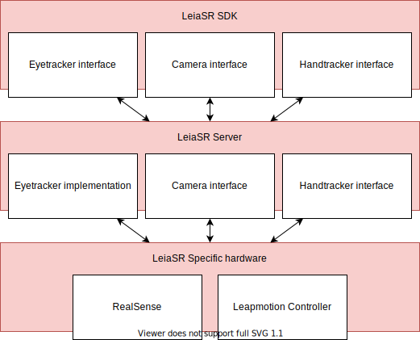
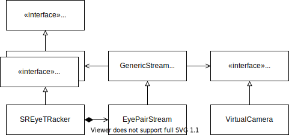

|
LeiaSR SDK 3e4093ae v1.34.8.37806 2025-10-23T12:33:42Z
Stable
|
|
LeiaSR SDK 3e4093ae v1.34.8.37806 2025-10-23T12:33:42Z
Stable
|
LeiaSR devices run a server application to provide access to the different sensors and components. Multiple applications can connect to this server application and gain access to the same interfaces. The server application ensures that different interfaces are calibrated with respect to one-another.

The system was designed with the concept of sensing information and being able to stimulate the users senses in many ways. An interface offered by the system is therefor referred to as a Sense.
There are several advantages to using these interfaces:
The EyeTracker interface is an interface that extends the Sense interface. Leia's EyeTracker implementation provides implementations of the pure virtual functions that applications can use to gain access to Eyetracking functionality. Application developers can open a new EyePairStream by providing an EyePairListener implementation. They can then use the acquired data to modify the camera perspective in their virtual worlds.

Provides access to data about the position of the user's eyes.
Provides access to data about the position of the user's eyes
Provides access to video input
Availability currently varies per LeiaSR device, direct access to camera devices may be affected by essential eyetracker software.
Provides access to data about gestures performed by the user
Under development
Data frames in the LeiaSR system are defined as C-compatible structs. This fixed memory lay-out can be easily communicated through different frameworks and API's, between different applications and hosts.